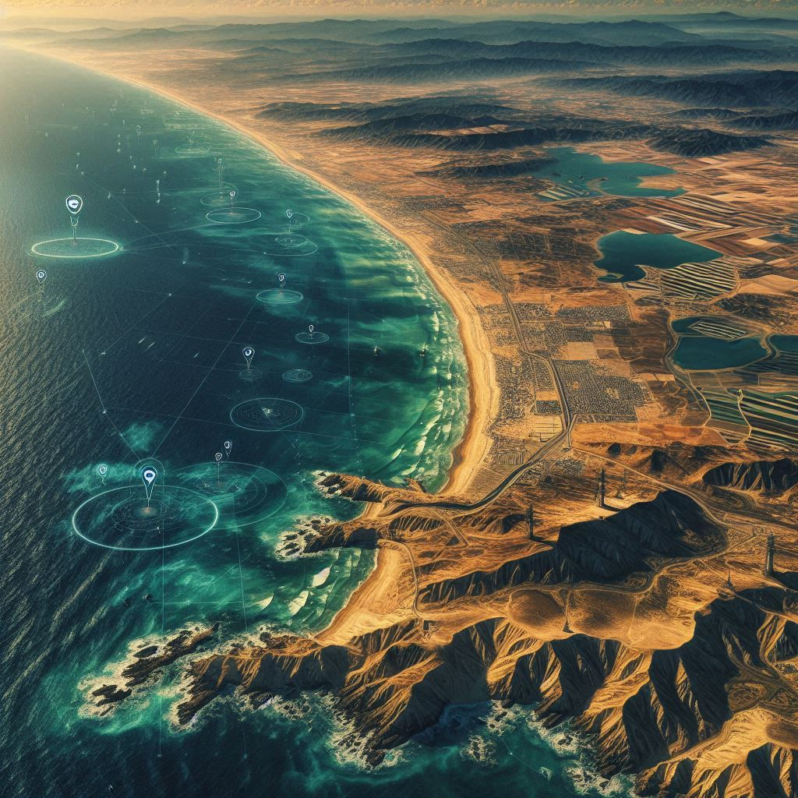

Roadmap de Desarrollo — Visión 2026-2050
🗣️ En lenguaje sencillo
¿Es realista este plan? Los hitos son ambiciosos pero alcanzables si la Fase 0 valida la física. El modelo de financiación es escalonado: cada fase reduce el riesgo de la siguiente.
¿Qué desbloquea cada fase? La Fase 0 desbloquea inversores para la Fase 1. La Fase 1 desbloquea financiación bancaria para Fase 2. A partir de ahí, el proyecto es autosuficiente.
❓ Preguntas frecuentes
¿Qué pasa si la Fase 0 falla o da malos resultados?
Se analiza la causa: si es un problema de diseño corregible, se ajusta y se repite. Si es un problema fundamental de física, el proyecto se detiene con €9M de pérdida — no €70M.
¿Quién financia cada fase?
Fase 0: inversores ángel o family office + subvenciones de I+D (CDTI, Horizonte Europa). Fase 1: private equity o financiación bancaria con los datos del piloto. Fases 2-5: financiación institucional y posible salida a bolsa.
¿En qué otros países funciona esto?
Cualquier costa con 500m de profundidad a menos de 20km. Candidatos: Portugal, Grecia, Chile, Japón, Noruega, Perú, Filipinas. El mercado potencial es global.
Visión General
2026 ── FASE 0: Validación ────────── €9M → 5 MW piloto (22 meses) 2028 ── FASE 1: Planta Comercial ──── €89M → 26 MW + OI 100k m³/día 2031 ── FASE 2: Segunda Unidad ─────── €85M → 52 MW total 2034 ── FASE 3: Expansión Nacional ── €400M → 5-6 plantas (150-200 MW) 2040 ── FASE 4: Madurez ─────────────── €400M → 450-500 MW España 2045 ── FASE 5: Exportación ─────────── TBD → Mediterráneo, Atlántico, Pacífico
Fase 0 (2026-2028): Validación Piloto
Objetivo: Validar física del sistema, confirmar CAPEX/OPEX reales, obtener datos Go/No-Go para Fase 1.
Hitos: Mes 6: permisos iniciales · Mes 12: fabricación completada · Mes 18: instalación · Mes 22: informe final Go/No-Go
Fase 1 (2028-2031): Planta Comercial 26.5 MW
Potencia: 26.5 MW + OI modular 100k m³/día
Ingresos esperados: €17.6M/año (electricidad) + €10M/año promedio (agua)
Payback: 2.7 años promedio (con ciclo hidrológico)
Financiación: 40% equity + 60% deuda (BEI / ICO Energy)
Fase 2 (2031-2034): Segunda Unidad
Potencia adicional: 26.5 MW (total: 53 MW)
Ventajas: -5% CAPEX por curva de aprendizaje, infraestructura parcial compartida
Ingresos combinados: €40-45M/año

Fase 3 (2034-2040): Expansión Nacional
| Ubicación | Profundidad 500m | Distancia costa |
|---|---|---|
| Huelva (Atlántico) | ✅ A 35 km | 35 km |
| Cádiz (Estrecho) | ✅ A 20 km | 20 km |
| Almería (Mediterráneo) | ✅ A 25 km | 25 km |
| Canarias (Atlántico) | ✅ A 10 km | 10 km |
| Galicia/Asturias | ✅ A 30 km | 30 km |
Total potencia: 150-200 MW
Inversión unitaria: 20% menor por economías de escala
Fase 4 (2040-2050): Madurez
500 MW × 95% CF × 8760h = 4,161 GWh/año Consumo eléctrico España: ~250,000 GWh/año Contribución: 1.7% consumo total (significativo)
Actividades: Renovación primera generación, tecnología segunda generación (50 MW/planta), inicio exportación tecnología.
Fase 5 (2045-2050): Exportación de Tecnología
| Región | Potencial | Profundidad 500m |
|---|---|---|
| Portugal y Azores | Alto | ✅ Muy cercana |
| Noruega | Alto | ✅ Inmediata |
| Japón | Muy alto | ✅ Muy cercana |
| Chile/Perú | Alto | ✅ Muy cercana |
| Australia | Alto | ✅ Cercana |
| Indonesia | Muy alto | ✅ Inmediata |
Impacto Económico Acumulado (Proyección 20 Años)
| Métrica | Valor |
|---|---|
| Inversión total acumulada | €800M - 1,200M |
| Empleos directos | 800-1,200 puestos |
| Empleos indirectos | 3,000-5,000 puestos |
| Ingresos acumulados | €3,000M+ |
| CO₂ evitado (vs gas natural) | 200M toneladas |
Factores Críticos de Éxito
- Éxito técnico Fase 0 → Sin esto, todo se detiene
- Permisos regulatorios en tiempo → Riesgo más alto
- Financiación bancaria disponible → Mercado favorable
- Precio electricidad sostenido → €70-90/MWh mínimo
- Contratos agua con gobiernos → Junta Andalucía + AEAS
- Protección IP → Patentes antes de publicación
Conclusión: Una Oportunidad Real
El proyecto representa una oportunidad legítima para crear una nueva industria energética española basada en tecnología propia, con:
- LCOE competitivo (€45/MWh con agua) frente a todas las alternativas marinas
- Energía base 24/7 (95% disponibilidad) que el sistema eléctrico necesita
- Doble producto (electricidad + agua) que multiplica el valor en años de sequía
- Escalabilidad a lo largo de todas las costas españolas con 500m de profundidad
- Potencial exportación de tecnología española a nivel global
No es una revolución energética. Es ingeniería bien planteada en un nicho específico y valioso, con economía demostrable y riesgos manejables.